4.1 Film
Moteur : un moteur de gradation paramétrique générique (espace HSL, courbe de tons à 3 zones, saturation/teinte/luminance par plage de teinte nommée, virage colorimétrique ombres/hautes lumières, balance des blancs, clarté/netteté, grain, écrêtage des noirs) piloté par une « calibration » déclarative par preset. Ce même moteur alimente aussi les lignes Bleach Bypass et B&W (§4.2, §4.5) — seul l'ensemble de presets diffère d'une ligne à l'autre.
Vignettes
| Vignette | Effet |
|---|---|
| Neutre | Aucune transformation — passthrough exact. |
| Classic Chrome | Palette mate et désaturée (saturation ×0,78, rouges/verts/magenta atténués), rafraîchie (−100K), ombres légèrement teintées bleu-cyan (215°) et hautes lumières à peine dorées (45°), grain fin. Le rendu « documentaire » desaturé caractéristique. |
| Velvia | Contraste marqué (+28), saturation fortement augmentée (×1,32 — verts, bleus et rouges dopés), verts/bleus légèrement tournés vers le jaune-vert/cyan, ombres profondes, refroidie (−150K). Rendu vif et punchy, pensé paysage/nature. |
| Astia | Contraste doux (−10), hautes lumières compressées, ombres ouvertes ; légère chaleur (+150K) et boost ciblé des teintes chair (orange), grain très fin. Le rendu « portrait doux » classique. |
| Pro Neg. Std | Contraste et hautes lumières abaissés, ombres ouvertes ; désaturation large et homogène (−8 à −10 % sur presque toutes les teintes, la peau étant la plus protégée), grain quasi imperceptible. Une base neutre et malléable plutôt qu'un rendu stylisé. |
| Eterna | Très plat (contraste −32, hautes lumières −35, ombres +25 largement ouvertes), fortement désaturé (×0,68), virage cinéma ombres cyan-sarcelle (200°) / hautes lumières orangées (40°), légèrement flouté (netteté −2). Le rendu « log » cinéma, volontairement inachevé à la sortie. |
| Classic Negative | Contraste marqué (+22), ombres approfondies, verts/cyans atténués, refroidie (−70K) avec une pointe de vert (teinte −6), virage ombres cyan-vert (185°) / hautes lumières ambrées (48°), clarté renforcée. Rendu punché à caractère « négatif grand public ». |
| Rizzle Clicks | Basé sur Classic Negative : clarté fortement réduite (halo/flou marqué), grain fort et fin, Dynamic Range 400 (hautes lumières protégées, ombres ouvertes), Color Chrome Effect fort (couleurs saturées approfondies), teinte froide (balance des blancs 4000K). |
| Glacier Blue | Basé sur Classic Negative : ombres relevées, saturation nettement réduite, sans grain, Dynamic Range 200, Color Chrome Blue (ciel/eau spécifiquement approfondis), teinte froide et légèrement verte. Le rendu glacé, épuré, annoncé par son nom. |
Réglages manuels
Intensité
- Intensité (
intensity, 0..1) — mélange le résultat gradé avec l'image d'origine (ou, pour un look noir et blanc, avec sa conversion en niveaux de gris) : 0 = aucun effet, 1 = effet complet.
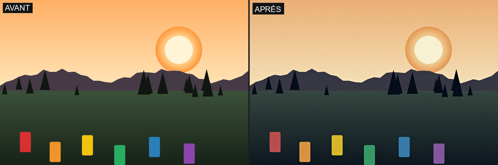
Tonalité
- Contraste (
contrast, -100..100) — accentue (positif) ou réduit (négatif) l'écart entre ombres et hautes lumières autour du gris moyen.
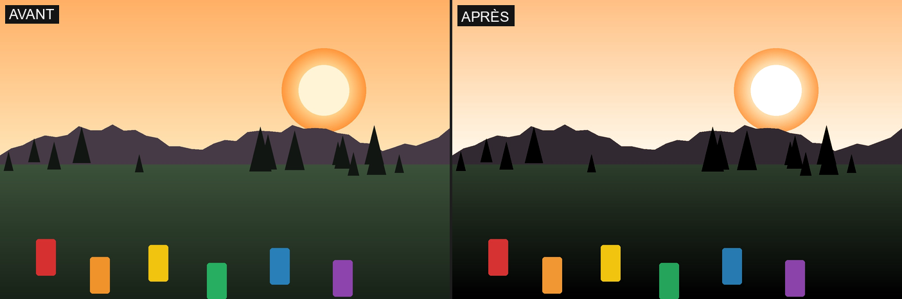
- Hautes lumières (
highlights, -100..100) — éclaircit/durcit (positif) ou compresse/protège (négatif) la zone des tons clairs.
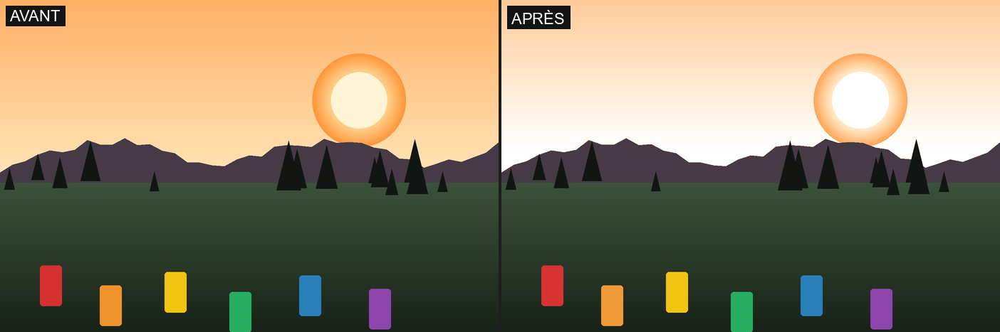
- Ombres (
shadows, -100..100) — éclaircit/ouvre (positif) ou assombrit/creuse (négatif) la zone des tons foncés.
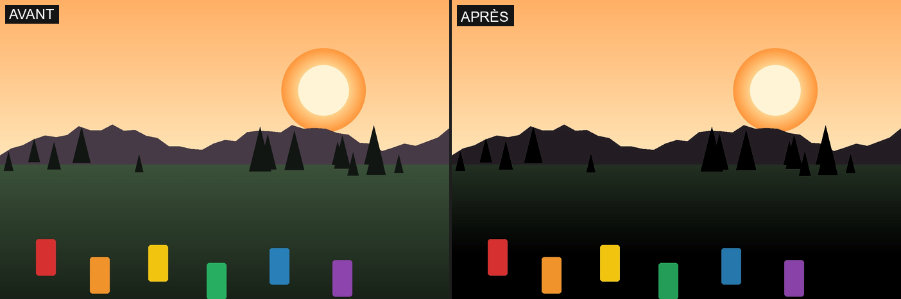
- Noir minimal / écrêtage (
black_clip, 0..0,10) — relève le point noir : les tons presque noirs sont progressivement écrasés vers le noir pur.
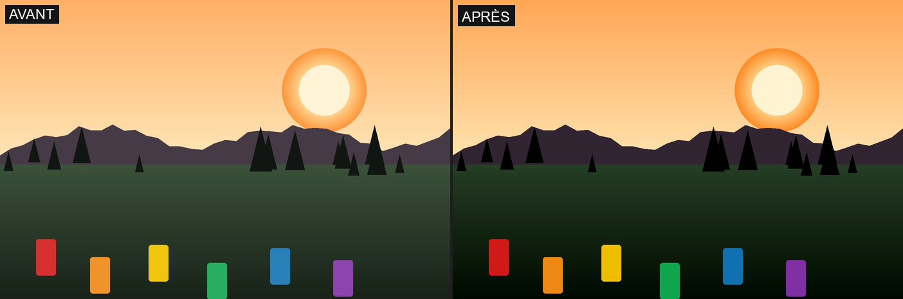
- Dynamic Range (
dynamic_range, Off/DR200/DR400) — protège conjointement les hautes lumières et ouvre les ombres (composé à partir des réglages de tonalité ci-dessus), pour un rendu plus plat et proche d'un profil « log ».
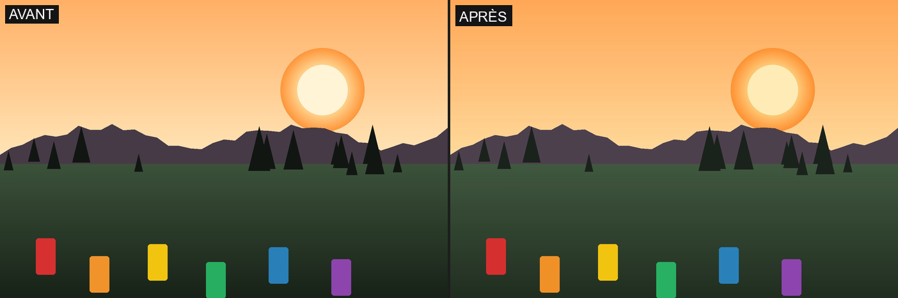
Couleur
- Saturation globale (
global_saturation, ×0..2) — multiplie la saturation de l'image entière.
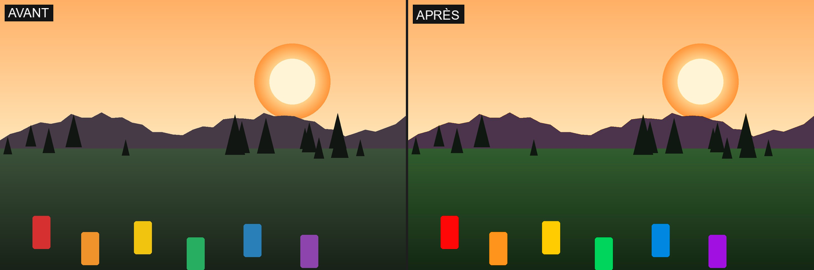
- Saturation HSL (
hsl_saturation_scale, ×0..2) — amplifie ou réduit les corrections de saturation par teinte déjà propres au look sélectionné (ici Classic Chrome, qui atténue magenta/rouge/vert/bleu) ; à 0, cette composante du look disparaît.
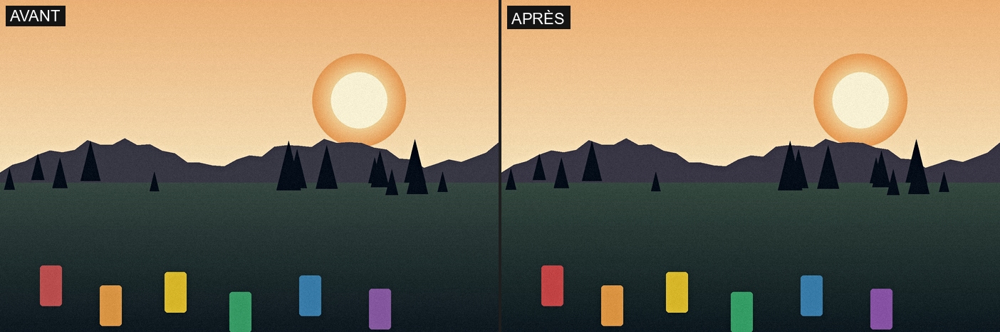
- Luminance HSL (
hsl_luminance_scale, ×0..2) — amplifie ou réduit les corrections de luminance par teinte du look (ici Astia, qui éclaircit légèrement les teintes chair/orange).
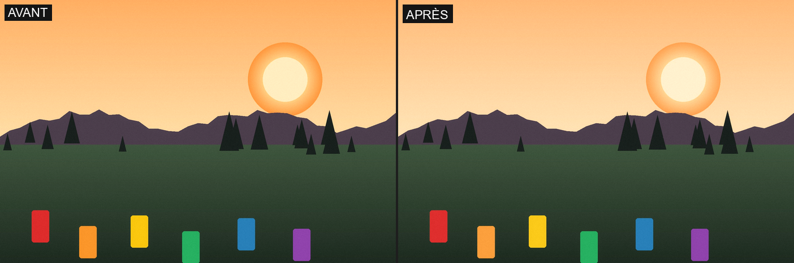
- Température (
temperature, -1000..1000) — réchauffe (positif) ou refroidit (négatif) la balance des blancs (approximation, pas un calcul planckien).
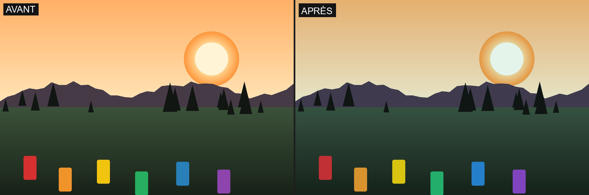
- Teinte (
tint, -20..20) — pousse vers le magenta (positif) ou le vert (négatif).
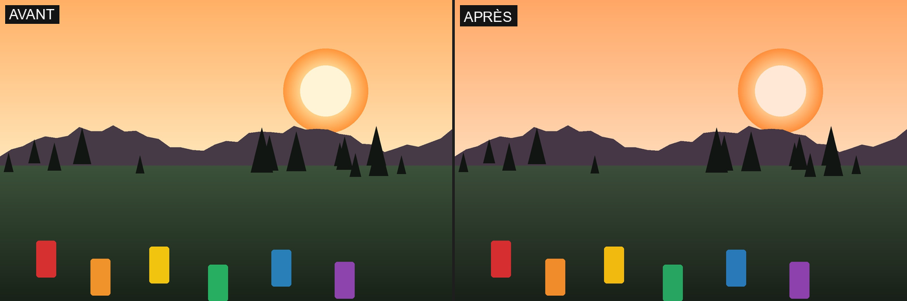
- Virage coloré (
split_tone_scale, ×0..2) — amplifie ou réduit la force du virage colorimétrique ombres/hautes lumières déjà défini par le look (ici Classic Chrome : ombres bleu-cyan, hautes lumières dorées) ; à 0, le virage disparaît.
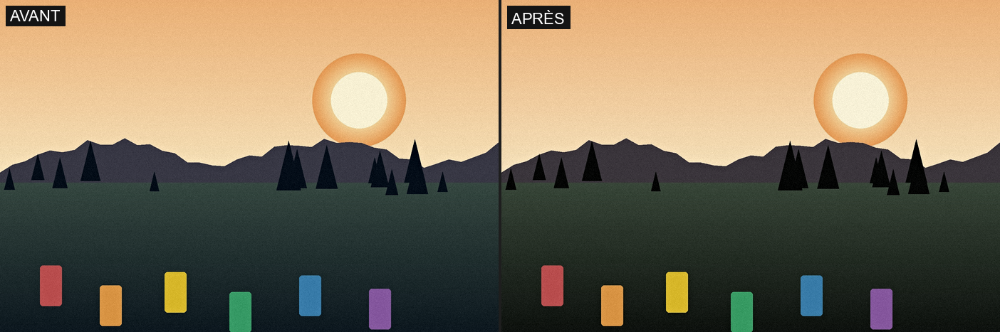
- Col. Chr. Effect (
color_chrome_effect, Off/Weak/Strong) — approfondit/protège les pixels les plus saturés et les plus lumineux de l'image, relativement au reste de cette même image. L'effet ne cible que le haut du classement (percentile) de saturation/luminosité propre à chaque image — sur une photo dont les couleurs sont déjà toutes proches en intensité (comme la photo d'exemple utilisée pour les autres réglages), la plage réellement ciblée est trop étroite pour se voir ; illustré ici sur une grille de teintes à plusieurs niveaux de vivacité, où seule la rangée la plus saturée/lumineuse (en haut) est visiblement assombrie/désaturée, les rangées plus ternes restant inchangées.
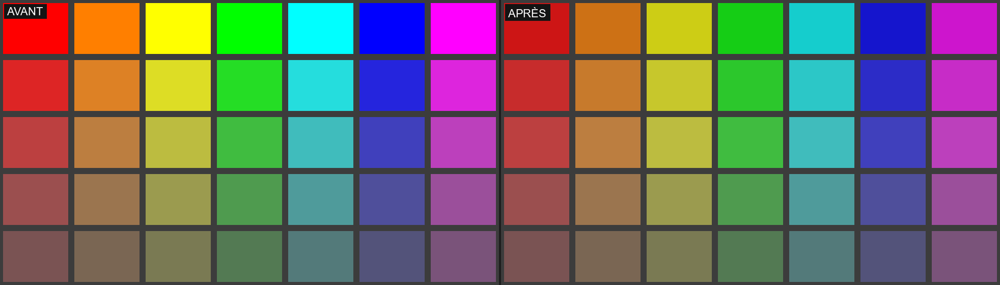
- Col. Chr. Blue (
color_chrome_blue, Off/Weak/Strong) — même mécanisme, restreint aux teintes bleu/cyan (ciel, eau). Sur la même grille : seules les cases bleu/cyan de la rangée la plus vive changent, toutes les autres teintes (rouge, orange, jaune, vert, magenta) restent identiques — la restriction de teinte de ce réglage, bien visible en comparaison directe.
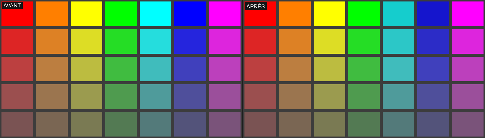
Texture & Grain
- Clarté (
clarity, -100..100) — contraste local à rayon large (masque flou sur la luminance) ; négatif = adoucit/brume, positif = accentue la texture des tons moyens.
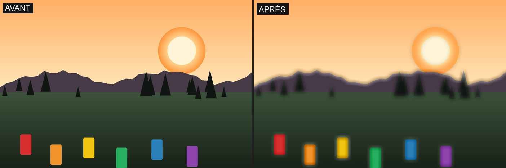
- Netteté (
sharpness, -100..100) — accentuation fine du détail (masque flou à rayon serré, par canal) ; négatif = flou, positif = netteté.
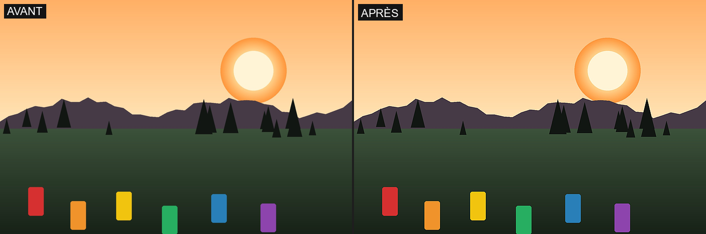
- Grain (
grain_std, 0..0,05) — ajoute un grain argentique déterministe (même image, même grain à chaque rendu).
Réglages spécifiques au rendu noir et blanc
Deux réglages n'ont d'effet que sur un look déjà converti en niveaux de gris (Acros et les presets de la ligne B&W, §4.5) — sans effet sur Film/Bleach Bypass tant qu'aucun filtre B&W n'est actif :
- Mono Colour WC (
mono_color_wc, -20..20) — virage chaud/froid appliqué à l'image déjà grise (distinct de la Température, qui agit avant la conversion).
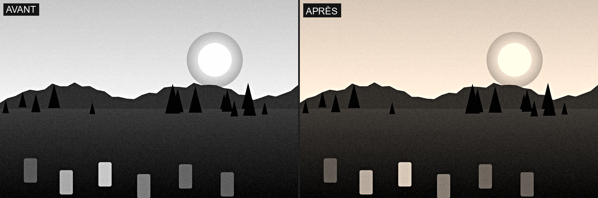
- Mono Colour MG (
mono_color_mg, -20..20) — virage vert/magenta appliqué à l'image déjà grise.
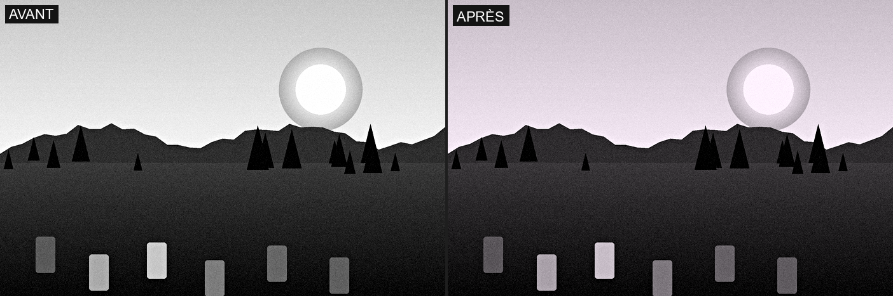